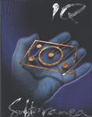

| Artist: | IQ |
| Title: | Subterranea The Concert DVD |
| Label: | Giant Electric Pea GEPDVD9001 |
| Length(s): | 150 minutes |
| Year(s) of release: | 2002 |
| Month of review: | [05/2002] |
Although I found the changing of the cameras sometimes a bit quick (of course nowhere near the speed obtained in filmed music clips), the footage does help you get a good idea of what is happening on stage and the image quality is really very good. It also strikes me, now that I see it happening, that the drums of Cook sound way to loud and being the "butcher" that he is, he is quite prominent on most tracks.
In the extras you learn how everything was construed and constructed and also recorded, sometimes very interesting and fun. You learn there for instance that the recording of the concert was broken in two due to some mishap. There is nothing to be noticed of this in the recording of the concert as it came to exist. In the extras is also the possibility to
Another extra is the addition of two non-Subterranea tracks, namely The Wake and Human Nature. The latter is also graced by an extensive and active sax solo. It is striking actually that Nicholls does so well these days on vocals. When I recall how his vocals deteriorated quickly when he had just come back into the band...it seems he has taken singing lessons to great avail. Not that his voice has changed much, but his technique has certainly improved.
The final extra, one that took me a bit of digging and questioning Mr. Orford, is that you can get a band commentary in the extras part. Well that is how it seemed to me. However, when you click, nothing happened. As it turns out, when you click on band commentary, the show itself will have the commentary of the band, so you can only know what setting it is on, by playing the live show. The music itself when Band Commentary is on (the same effect can be obtained by switching to Language 3) is turned down low, while the band members constantly give their views on what is happening in the music. I did not listen to all of it, but it does help you get a better idea of what\ goes in detail in the music and why it is like it is.
I was rather disappointed that the DVD and the film itself do no contain any lyrics. It would have been nice to add these as subtitles of some kind, but alas this has not been done. The booklet with the DVD also has no lyrics.
I also viewed the DVD on my PC under Windows and it looked quite good. The images are a bit less fluent (as opposed to a special DVD player played on a wide screen tv), but my 19" monitor did it well. A bonus is that using the DVD machinery is easier on a computer.